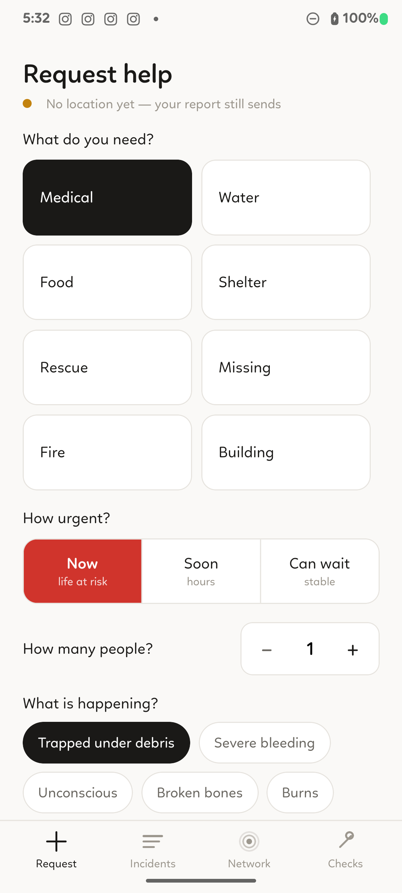

Offline Disaster Mesh.
When Everything Else Fails.
P.A.T.R.O.L. is an autonomous emergency mesh network for the first 72 hours of a disaster. Phones pass panic signals, casualty counts, and triage updates hop-by-hop over raw Bluetooth LE — zero cell towers, zero Wi-Fi, zero servers.

Engineered with Robust Offline Technologies
Disaster-Tested UI
Four Focused Screens
1. Request
3-tap panic composer. S.T.A.R.T. triage selection, casualty counter, and automatic satellite GPS tagging.
2. Incidents
Live triage feed. Geo-deduplicated clusters, status lifecycle management, and reverse status dispatching.
3. Network
Mesh topology inspector, direct/relayed peer list, signal dBm indicators, and outbox echo receipts.
4. Checks
Four preflight status lights: BLE advertise support, scanner state, location services, and database integrity.
System Architecture
Engineered from the ground up for extreme physical constraints and total zero-infrastructure autonomy.
Connectionless BLE Gossip
Zero GATT connection handshakes, zero pairing popups, and no ~7 device limits. 20-byte raw frames broadcast 1-to-N to all nearby phones simultaneously.
7-Hop Multi-Node Relay
Epidemic controlled flooding. Hearing an unknown packet adds it to your device's broadcast rotation with decremented TTL, bridging isolated survivor pockets.
GPS-Free RSSI Localization
Locates victims trapped in basements or rubble without satellite fix. Surrounding GPS-fixed nodes broadcast signal observation packets to trilaterate search areas.
Monotonic Lattice CRDT
Conflict-free state merges via mathematical supremum: Reported < Ack < InProgress < Resolved. Resolved incidents never regress.
3-Tap S.T.A.R.T. Triage
Rapid, high-stress interface. Select category, urgency (Now / Soon / Can wait), casualty count, and send immediately with automatic satellite coordinates.
Echo Delivery Receipts
When peers relay your broadcast, they increment the hop counter. Hearing your own node ID on the radio with hops > 0 gives proof of pickup with zero overhead.
The 20-Byte Binary Frame (`PATROL/1`)
Fits cleanly inside legacy 31-byte BLE advertising packets without fragmentation or MTU negotiation delays.
adb install -r patrol-latest.apk
Open Source Disaster Infrastructure